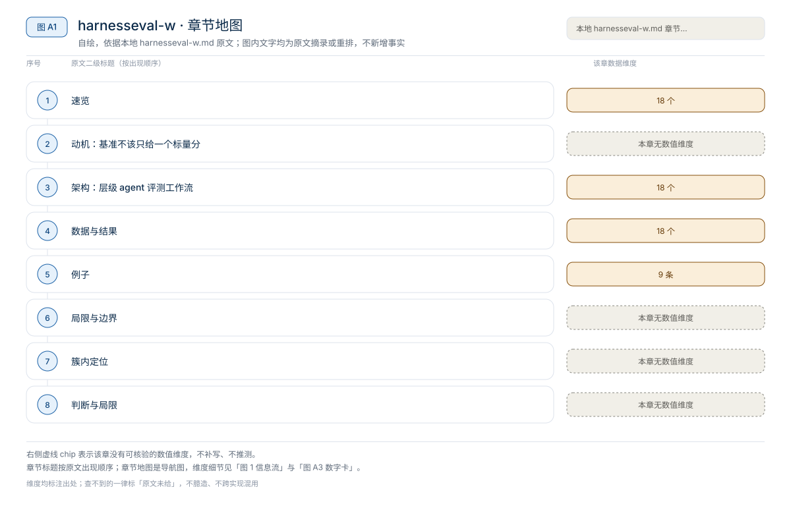
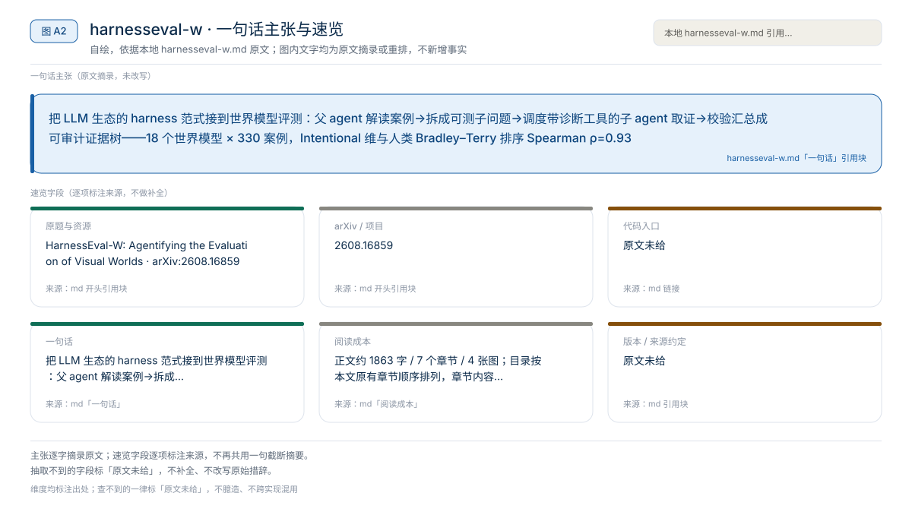
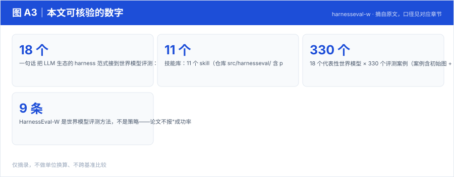
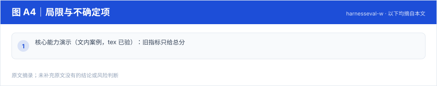

【Harness VLA · 代码即策略与技能发现】RAX 深读：把在线探索做成 Scaling Law，五大基准平均领先 37.4 个点
冻结通用 coding agent 直接连机器人感知/控制接口，把"在线探索"做成 scaling law：成功决策编译成程序、版本化入库，能力随探索预算单调增长
Harness01-代码即策略与技能发现2026
把 LLM 生态的 harness 范式接到世界模型评测：父 agent 解读案例→拆成可测子问题→调度带诊断工具的子 agent 取证→校验汇总成可审计证据树——18 个世界模型 × 330 案例，Intentional 维与人类 Bradley–Terry 排序 Spearman ρ=0.93
原题与资源：HarnessEval-W: Agentifying the Evaluation of Visual Worlds · arXiv:2608.16859
一句话：把 LLM 生态的 harness 范式接到世界模型评测：父 agent 解读案例→拆成可测子问题→调度带诊断工具的子 agent 取证→校验汇总成可审计证据树——18 个世界模型 × 330 案例，Intentional 维与人类 Bradley–Terry 排序 Spearman ρ=0.93
阅读成本：正文约 1863 字 / 7 个章节 / 4 张图；目录按本文原有章节顺序排列，章节内容未改动。
目录（点击跳到对应章节）：

图 A1：本文章节地图（节点即原文 h2 标题）。自绘，依据本文，不新增事实。
| 项 | 内容 |
|---|---|
| 一句话 | 把 LLM 生态的 harness 范式接到世界模型评测：父 agent 解读案例→拆成可测子问题→调度带诊断工具的子 agent 取证→校验汇总成可审计证据树——18 个世界模型 × 330 案例，Intentional 维与人类 Bradley–Terry 排序 Spearman ρ=0.93 |
| 冻结 | 被评测的 18 个世界模型；评测管线本身开源（Apache-2.0，harnesseval CLI：eval/plan/generate/verify） |
| 演化 | 开放技能库与评测案例，邀请社区扩展（live benchmark） |
| 三轴 | Render（观测质量）/ Transition（干预下状态转移）/ Persistence（长程世界持续性） |

图 A2：一句话主张与速览字段。自绘，依据本文，不新增事实。

图 A3：本文可核验的数字摘录。自绘，依据本文，不新增事实。
一个具体任务走一遍 · 本文可核验数字与字段速查（以下均摘自原文，未作推算）：
评测案例 → 父 Agent：解读上下文 → 拆成可测子问题（按案例路由技能）
→ 子 Agent × N：各带定制上下文 + 诊断工具（视觉 grounding 等）
对自己的子问题独立取证打分
→ 父 Agent 校验证据 → 汇总最终判定
→ 产出 evidence tree：测了什么 / 哪个工具提供视觉依据 / 完整逻辑链交互式世界模型案例："按住勺子但左夹爪被要求放松"——旧指标只给总分；HarnessEval-W 的证据树显示：Sub-agent "no extra event" 给 0.582/0.750，另一个子问题满分 0.913，最终分数能追溯到底是哪个子问题失败。
HarnessEval-W 是世界模型评测方法，不是策略——论文不报"成功率对比表"，而是给出 9 条评测轴（Table 1）与证据树归因。核心能力演示（文内案例，tex 已验）：旧指标只给总分；HarnessEval-W 把"按住勺子但左夹爪被要求放松"拆成子问题——Sub-agent "no extra event" 得 0.582/0.750，另一子问题 0.913——分数能追溯到具体失败子问题。
作为评测框架，其对照是与"整体打分"基线的归因能力差异（上述案例）；无组件消融表。
本文判断：三轴：Render（观测质量）/ Transition（干预下状态转移）/ Persistence（长程世界持续性）
局限与不确定项（以下均摘自本文，未作推断）：

图 A4：局限与不确定项摘录。自绘，依据本文，不新增事实。
覆盖范围：本页新增的导读、目录、章节地图、数字卡与局限清单，均为原文信息的重排或摘录；正文、数据与实验结论未改动。